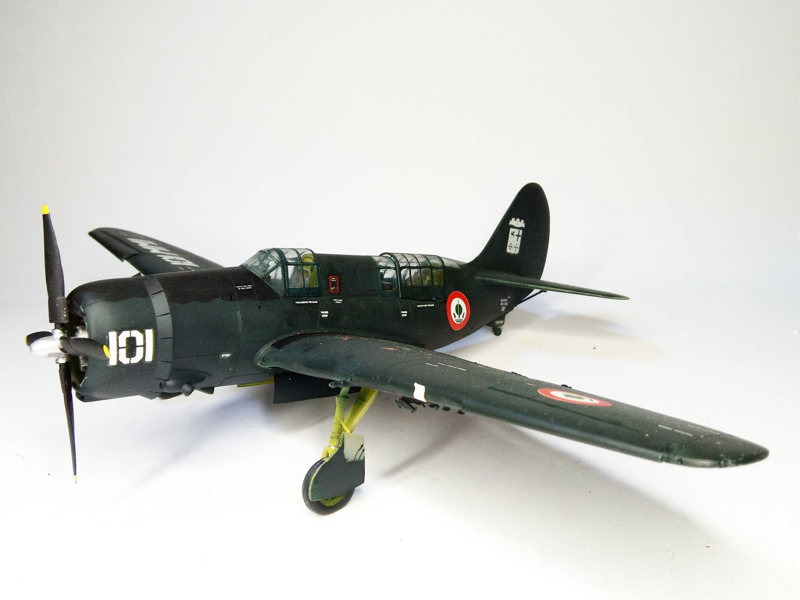
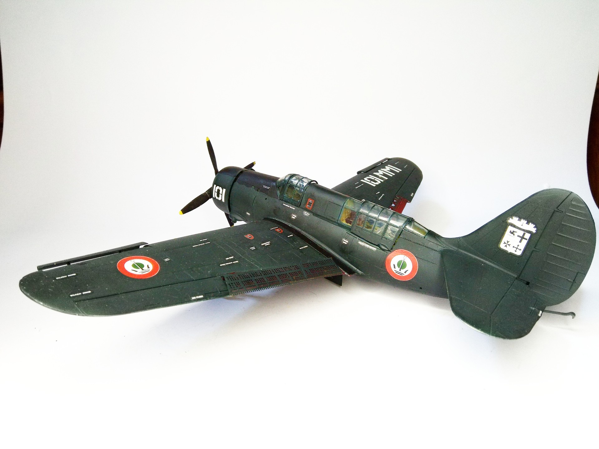

Aerei · scale model archive
Curtiss SB2C-5 Helldiver
Curtiss SB2C-5 Helldiver — Kit: Rvell, Scale: 1/48. Marina Militare Italiana Corpus Christi NAS 29 Sept 1952 #1/48 #Revell #Helldiver

Photo gallery

English description
Marina Militare Italiana Corpus Christi NAS 29 Sept 1952
#1/48 #Revell #Helldiver
Descrizione italiana
Marina Militare Italiana, Corpus Christi NAS, 29 settembre 1952.